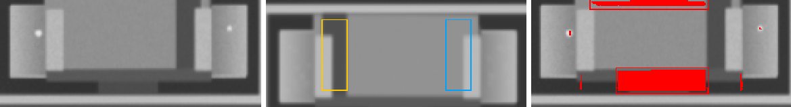
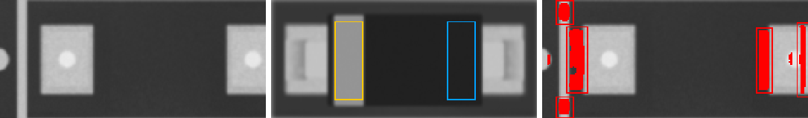
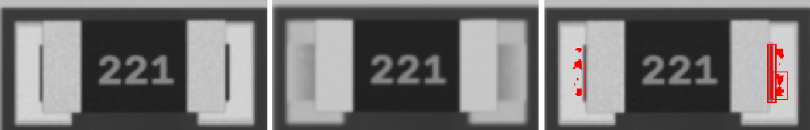
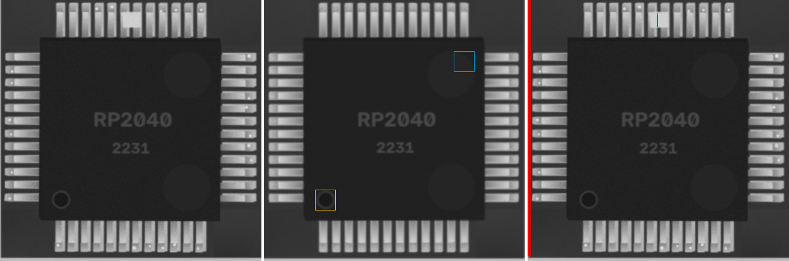
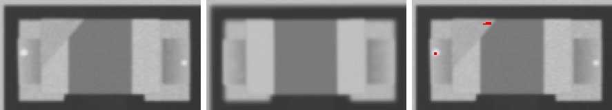

22p · 0805
ANOMALY

ncc 0.913 · ncc_thr 0.6 · mad 3.1 · mad_thr 8.1 · dx_mm 0.023 · dy_mm 0.093 · dtheta_deg 2.0 · anomaly_px 301
Tantalum_Case-A · Tantalum_Case-A
POLARITY

ncc 0.475 · ncc_thr 0.6 · ncc_180 0.66 · mad 6.8 · mad_thr 20.6 · mark_ncc {'0': 0.99, '180': 0.75} · dx_mm 0.093 · dy_mm 0.488 · dtheta_deg -0.0 · anomaly_px 1795
SOD-123 · SOD-123
MISMATCH

ncc 0.738 · ncc_thr 0.6 · ncc_180 0.735 · mad 1.1 · mad_thr 6.9 · mark_ncc {'0': 0.037, '180': 0.19} · dx_mm -0.465 · dy_mm 0.0 · dtheta_deg -0.0 · anomaly_px 1249
220 · 1206
ANOMALY

ncc 0.986 · ncc_thr 0.6 · mad 4.4 · mad_thr 9.1 · dx_mm 0.0 · dy_mm -0.023 · dtheta_deg -0.0 · anomaly_px 152
RP2040 · LQFP-48
ANOMALY

ncc 0.934 · ncc_thr 0.6 · mad 1.4 · mad_thr 7.2 · mark_ncc {'0': 0.967, '90': 0.04, '180': 0.04, '270': 0.085} · dx_mm -0.07 · dy_mm 0.023 · dtheta_deg -0.0 · anomaly_px 860
47u · CP_Elec_5x5.8
ncc 0.981 · ncc_thr 0.6 · mad 8.7 · mad_thr 13.3 · mark_ncc {'0': 0.97, '180': -0.275} · dx_mm 0.0 · dy_mm 0.047 · dtheta_deg -0.0 · anomaly_px 0
100n · 0603
ncc 0.975 · ncc_thr 0.6 · mad 4.1 · mad_thr 9.3 · dx_mm -0.023 · dy_mm -0.023 · dtheta_deg -0.0 · anomaly_px 0
Tantalum_Case-A · Tantalum_Case-A
ncc 0.987 · ncc_thr 0.6 · mad 3.1 · mad_thr 8.3 · mark_ncc {'0': 0.991, '180': 0.554} · dx_mm 0.047 · dy_mm -0.07 · dtheta_deg -0.0 · anomaly_px 0
22p · 0805
ncc 0.989 · ncc_thr 0.6 · mad 2.8 · mad_thr 8.5 · dx_mm 0.047 · dy_mm 0.0 · dtheta_deg -0.0 · anomaly_px 0
10u · 0603
ncc 0.989 · ncc_thr 0.6 · mad 2.8 · mad_thr 9.5 · dx_mm 0.023 · dy_mm 0.0 · dtheta_deg -0.0 · anomaly_px 0
10u · 0402
ncc 0.984 · ncc_thr 0.6 · mad 3.8 · mad_thr 10.7 · dx_mm 0.047 · dy_mm -0.023 · dtheta_deg -2.0 · anomaly_px 0
10u · 0603
ncc 0.962 · ncc_thr 0.6 · mad 4.7 · mad_thr 9.3 · dx_mm 0.023 · dy_mm 0.023 · dtheta_deg -0.0 · anomaly_px 0
100n · 0402
ncc 0.983 · ncc_thr 0.6 · mad 3.1 · mad_thr 9.6 · dx_mm 0.023 · dy_mm 0.023 · dtheta_deg -0.0 · anomaly_px 0
10n · 0805
ncc 0.991 · ncc_thr 0.6 · mad 2.6 · mad_thr 8.7 · dx_mm 0.023 · dy_mm 0.0 · dtheta_deg -0.0 · anomaly_px 0
10u · 0603
ncc 0.987 · ncc_thr 0.6 · mad 3.1 · mad_thr 8.5 · dx_mm 0.023 · dy_mm 0.0 · dtheta_deg -0.0 · anomaly_px 0
10u · 0402
ncc 0.952 · ncc_thr 0.6 · mad 4.6 · mad_thr 11.3 · dx_mm -0.023 · dy_mm 0.047 · dtheta_deg -0.0 · anomaly_px 0
100n · 0805
ncc 0.979 · ncc_thr 0.6 · mad 2.8 · mad_thr 8.7 · dx_mm -0.093 · dy_mm 0.0 · dtheta_deg -0.0 · anomaly_px 0
4u7 · 0805
ncc 0.993 · ncc_thr 0.6 · mad 2.4 · mad_thr 8.0 · dx_mm 0.023 · dy_mm 0.0 · dtheta_deg -0.0 · anomaly_px 0
22p · 0402
ncc 0.961 · ncc_thr 0.6 · mad 4.6 · mad_thr 11.6 · dx_mm -0.047 · dy_mm -0.023 · dtheta_deg -0.0 · anomaly_px 0
22p · 0402
ncc 0.935 · ncc_thr 0.6 · mad 6.0 · mad_thr 12.3 · dx_mm 0.023 · dy_mm -0.023 · dtheta_deg 2.0 · anomaly_px 0
22p · 0805

ncc 0.978 · ncc_thr 0.6 · mad 6.8 · mad_thr 8.8 · dx_mm 0.0 · dy_mm 0.0 · dtheta_deg -0.0 · anomaly_px 0
47u · CP_Elec_5x5.8
ncc 0.991 · ncc_thr 0.6 · mad 8.1 · mad_thr 18.2 · mark_ncc {'0': 0.979, '180': -0.34} · dx_mm 0.0 · dy_mm -0.023 · dtheta_deg -0.0 · anomaly_px 0
10u · 0603
ncc 0.984 · ncc_thr 0.6 · mad 3.1 · mad_thr 9.1 · dx_mm 0.023 · dy_mm 0.0 · dtheta_deg -0.0 · anomaly_px 0
SOD-123 · SOD-123
ncc 0.993 · ncc_thr 0.6 · mad 0.9 · mad_thr 6.9 · mark_ncc {'0': 0.988, '180': 0.146} · dx_mm 0.023 · dy_mm 0.023 · dtheta_deg -0.0 · anomaly_px 0
LED_0805 · LED_0805
ncc 0.99 · ncc_thr 0.6 · ncc_180 0.821 · mad 2.4 · mad_thr 9.0 · mark_ncc {'0': 0.0, '180': 0.0} · dx_mm 0.047 · dy_mm -0.023 · dtheta_deg -0.0 · anomaly_px 0
SMA · SMA
ncc 0.995 · ncc_thr 0.6 · mad 1.2 · mad_thr 7.2 · mark_ncc {'0': 0.92, '180': 0.018} · dx_mm 0.0 · dy_mm 0.023 · dtheta_deg -0.0 · anomaly_px 0
LED_0805 · LED_0805

ncc 0.993 · ncc_thr 0.6 · ncc_180 0.824 · mad 2.7 · mad_thr 8.4 · mark_ncc {'0': 0.0, '180': 0.0} · dx_mm 0.023 · dy_mm 0.0 · dtheta_deg -0.0 · anomaly_px 0
J3Y · SOT-23
ncc 0.961 · ncc_thr 0.6 · ncc_180 0.365 · mad 1.6 · mad_thr 7.3 · mad_180 2.0 · dx_mm 0.023 · dy_mm 0.0 · dtheta_deg -0.0 · anomaly_px 0
0R · 0603
ncc 0.993 · ncc_thr 0.6 · mad 3.0 · mad_thr 10.0 · dx_mm 0.023 · dy_mm -0.023 · dtheta_deg -0.0 · anomaly_px 0
0R · 1206
ncc 0.998 · ncc_thr 0.6 · mad 3.0 · mad_thr 8.7 · dx_mm 0.023 · dy_mm 0.0 · dtheta_deg -0.0 · anomaly_px 0
0R · 0805
ncc 0.99 · ncc_thr 0.6 · mad 4.4 · mad_thr 9.7 · dx_mm 0.07 · dy_mm -0.023 · dtheta_deg -0.0 · anomaly_px 0
0R · 0402
ncc 0.995 · ncc_thr 0.6 · mad 5.5 · mad_thr 16.5 · dx_mm 0.0 · dy_mm 0.0 · dtheta_deg -0.0 · anomaly_px 0
100k · 0603
ncc 0.983 · ncc_thr 0.6 · mad 4.4 · mad_thr 10.5 · dx_mm -0.07 · dy_mm -0.047 · dtheta_deg -0.0 · anomaly_px 0
220 · 0402
ncc 0.989 · ncc_thr 0.6 · mad 3.5 · mad_thr 18.1 · dx_mm -0.023 · dy_mm 0.023 · dtheta_deg -0.0 · anomaly_px 0
10k · 0402
ncc 0.996 · ncc_thr 0.6 · mad 4.3 · mad_thr 14.1 · dx_mm 0.0 · dy_mm 0.0 · dtheta_deg -0.0 · anomaly_px 0
1k · 0805
ncc 0.99 · ncc_thr 0.6 · mad 5.2 · mad_thr 9.3 · dx_mm -0.07 · dy_mm 0.023 · dtheta_deg -0.0 · anomaly_px 0
4k7 · 0603
ncc 0.997 · ncc_thr 0.6 · mad 4.6 · mad_thr 10.1 · dx_mm -0.023 · dy_mm 0.0 · dtheta_deg -0.0 · anomaly_px 0
4k7 · 0402
ncc 0.986 · ncc_thr 0.6 · mad 6.8 · mad_thr 16.8 · dx_mm 0.047 · dy_mm 0.0 · dtheta_deg 2.0 · anomaly_px 0
1k · 1206
ncc 0.996 · ncc_thr 0.6 · mad 3.1 · mad_thr 8.9 · dx_mm -0.093 · dy_mm 0.023 · dtheta_deg -0.0 · anomaly_px 0
10k · 1206
ncc 0.994 · ncc_thr 0.6 · mad 3.5 · mad_thr 9.0 · dx_mm 0.0 · dy_mm -0.023 · dtheta_deg -0.0 · anomaly_px 0
100k · 0805
ncc 0.991 · ncc_thr 0.6 · mad 3.9 · mad_thr 9.8 · dx_mm 0.023 · dy_mm 0.07 · dtheta_deg -0.0 · anomaly_px 0
4k7 · 0603
ncc 0.997 · ncc_thr 0.6 · mad 3.8 · mad_thr 10.1 · dx_mm 0.0 · dy_mm 0.0 · dtheta_deg -0.0 · anomaly_px 0
0R · 0805
ncc 0.997 · ncc_thr 0.6 · mad 3.6 · mad_thr 9.5 · dx_mm -0.023 · dy_mm 0.0 · dtheta_deg -0.0 · anomaly_px 0
220 · 0805
ncc 0.995 · ncc_thr 0.6 · mad 3.9 · mad_thr 9.7 · dx_mm 0.023 · dy_mm 0.023 · dtheta_deg -0.0 · anomaly_px 0
0R · 0805
ncc 0.994 · ncc_thr 0.6 · mad 4.4 · mad_thr 9.9 · dx_mm -0.047 · dy_mm 0.0 · dtheta_deg -0.0 · anomaly_px 0
ESP32-C3 · QFN-32
ncc 0.969 · ncc_thr 0.6 · mad 1.5 · mad_thr 7.4 · mark_ncc {'0': 0.995, '90': 0.131, '180': 0.251, '270': 0.253} · dx_mm -0.047 · dy_mm 0.0 · dtheta_deg -0.0 · anomaly_px 0
NE555 · SOIC-8
ncc 0.972 · ncc_thr 0.6 · mad 1.7 · mad_thr 7.4 · mark_ncc {'0': 0.96, '180': 0.197} · dx_mm -0.023 · dy_mm -0.07 · dtheta_deg -0.0 · anomaly_px 0
STM32F030 · TSSOP-20
ncc 0.971 · ncc_thr 0.6 · mad 1.6 · mad_thr 7.8 · mark_ncc {'0': 0.948, '180': 0.19} · dx_mm 0.0 · dy_mm 0.0 · dtheta_deg -0.0 · anomaly_px 0
NE555 · SOIC-8
ncc 0.979 · ncc_thr 0.6 · mad 1.0 · mad_thr 7.0 · mark_ncc {'0': 0.973, '180': 0.044} · dx_mm 0.0 · dy_mm 0.047 · dtheta_deg -0.0 · anomaly_px 0
nRF52810 · QFN-32
ncc 0.954 · ncc_thr 0.6 · mad 2.4 · mad_thr 7.5 · mark_ncc {'0': 0.992, '90': 0.208, '180': 0.095, '270': 0.069} · dx_mm 0.023 · dy_mm 0.0 · dtheta_deg -0.0 · anomaly_px 0